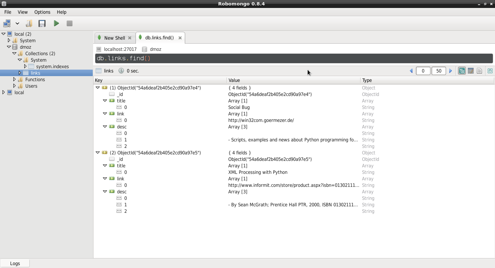

Extracción de datos de páginas web con scrapy y MongoDB
Posted on vie 02 enero 2015 in Tutorial Python y Linux • 5 min read
En el artículo anterior (Extracción de datos de páginas web con scrapy se hizo una introducción del uso de scrapy basándose en el tutorial de la página del proyecto.
Este artículo continua la serie de artículos sobre extracción de datos de páginas web (webscraping.
En el artículo anterior se extrajo información de la página dmoz.org, en este caso se usará la misma página, pero está vez basandose en el artículo en Inglés Web scraping with scrapy and MongoDB.
En este artículo le hacen la extracción de datos a stackoverflow, pero por problemas de conexión se mostrará la extracción con el sitio dmoz.org.
Aparte de hacer la extracción de datos se agregará lo extraído a la basa de datos Mongo, para montar el servidor MongoDB pueden seguir el siguiente artículo, y para usarlo desde python este otro.
Para visualizar los datos insertados en MongoDB se puede instalar la aplicación robomongo.
El procedimiento es el mismo que el del artículo anterior, se crea el proyecto:
$scrapy startproject dmoz
Se modifica el archivo dmoz/dmoz/items.py:
from scrapy import Item,Field
class DmozItem(Item):
title = Field()
link = Field()
desc = Field()
Ahora se crea la araña dmoz/dmoz/spider/dmoz_spider.py:
# -*- coding: utf-8 -*-
#Se importa Spider y Selector
from scrapy import Spider
from scrapy.selector import Selector
#Se importa la clase DmozItem
from dmoz.items import DmozItem
#Se crea la clase DmozSpider que hereda de Spider .
class DmozSpider(Spider):
#Se define el nombre del proyecto
name = 'dmoz'
#El proyecto al cual está permitido
allowed_domains = ['dmoz.org']
#Se define las urls a extraer datos
start_urls = ["http://www.dmoz.org/Computers/Programming/Languages/Python/Books/",
"http://www.dmoz.org/Computers/Programming/Languages/Python/Resources/"
]
def parse(self, response):
#Se instancia el selector de ul-> li del artículo anterior
questions = Selector(response).xpath('//ul/li')
#Se crea una lista de items
items = []
#Se recorre los li
for question in questions:
#Se instancia DmozItem en item
item = DmozItem()
#Se extra title, link y descripción de cada enlace de la página
title = question.xpath('a/text()').extract()
link = question.xpath('a/@href').extract()
desc = question.xpath('text()').extract()
#Se asocia estos elementos a la lista
item['title'] = title
item['link'] = link
item['desc'] = desc
items.append(item)
#Se retorna el item
return item
Se prueba la araña y luego se guarda en un archivo json.
scrapy crawl dmoz
2015-01-02 14:33:37-0430 [scrapy] INFO: Scrapy 0.24.2 started (bot: dmoz)
2015-01-02 14:33:37-0430 [scrapy] INFO: Optional features available: ssl, http11, boto, django
2015-01-02 14:33:37-0430 [scrapy] INFO: Overridden settings: {'NEWSPIDER_MODULE': 'dmoz.spiders', 'SPIDER_MODULES': ['dmoz.spiders'], 'BOT_NAME': 'dmoz'}
2015-01-02 14:33:37-0430 [scrapy] INFO: Enabled extensions: LogStats, TelnetConsole, CloseSpider, WebService, CoreStats, SpiderState
2015-01-02 14:33:39-0430 [scrapy] INFO: Enabled downloader middlewares: HttpAuthMiddleware, DownloadTimeoutMiddleware, UserAgentMiddleware, RetryMiddleware, DefaultHeadersMiddleware, MetaRefreshMiddleware, HttpCompressionMiddleware, RedirectMiddleware, CookiesMiddleware, ChunkedTransferMiddleware, DownloaderStats
2015-01-02 14:33:39-0430 [scrapy] INFO: Enabled spider middlewares: HttpErrorMiddleware, OffsiteMiddleware, RefererMiddleware, UrlLengthMiddleware, DepthMiddleware
/usr/lib/python2.7/dist-packages/scrapy/contrib/pipeline/__init__.py:21: ScrapyDeprecationWarning: ITEM_PIPELINES defined as a list or a set is deprecated, switch to a dict
category=ScrapyDeprecationWarning, stacklevel=1)
2015-01-02 14:33:39-0430 [scrapy] INFO: Enabled item pipelines: MongoDBPipeline
2015-01-02 14:33:39-0430 [dmoz] INFO: Spider opened
2015-01-02 14:33:39-0430 [dmoz] INFO: Crawled 0 pages (at 0 pages/min), scraped 0 items (at 0 items/min)
2015-01-02 14:33:39-0430 [scrapy] DEBUG: Telnet console listening on 127.0.0.1:6023
2015-01-02 14:33:39-0430 [scrapy] DEBUG: Web service listening on 127.0.0.1:6080
2015-01-02 14:33:45-0430 [dmoz] DEBUG: Crawled (200) <GET http://www.dmoz.org/Computers/Programming/Languages/Python/Resources/> (referer: None)
2015-01-02 14:33:45-0430 [dmoz] DEBUG: Question added to MongoDB database!
2015-01-02 14:33:45-0430 [dmoz] DEBUG: Scraped from <200 http://www.dmoz.org/Computers/Programming/Languages/Python/Resources/>
{'desc': [u'\r\n\t\r\n ',
u' \r\n\t\t\t\r\n - Scripts, examples and news about Python programming for the Windows platform.\r\n \r\n ',
u'\r\n '],
'link': [u'http://win32com.goermezer.de/'],
'title': [u'Social Bug']}
2015-01-02 14:33:46-0430 [dmoz] DEBUG: Crawled (200) <GET http://www.dmoz.org/Computers/Programming/Languages/Python/Books/> (referer: None)
2015-01-02 14:33:46-0430 [dmoz] DEBUG: Question added to MongoDB database!
2015-01-02 14:33:46-0430 [dmoz] DEBUG: Scraped from <200 http://www.dmoz.org/Computers/Programming/Languages/Python/Books/>
{'desc': [u'\r\n\t\r\n ',
u' \r\n\t\t\t\r\n - By Sean McGrath; Prentice Hall PTR, 2000, ISBN 0130211192, has CD-ROM. Methods to build XML applications fast, Python tutorial, DOM and SAX, new Pyxie open source XML processing library. [Prentice Hall PTR]\r\n \r\n ',
u'\r\n '],
'link': [u'http://www.informit.com/store/product.aspx?isbn=0130211192'],
'title': [u'XML Processing with Python']}
2015-01-02 14:33:46-0430 [dmoz] INFO: Closing spider (finished)
2015-01-02 14:33:46-0430 [dmoz] INFO: Dumping Scrapy stats:
{'downloader/request_bytes': 516,
'downloader/request_count': 2,
'downloader/request_method_count/GET': 2,
'downloader/response_bytes': 16342,
'downloader/response_count': 2,
'downloader/response_status_count/200': 2,
'finish_reason': 'finished',
'finish_time': datetime.datetime(2015, 1, 2, 19, 3, 46, 119507),
'item_scraped_count': 2,
'log_count/DEBUG': 8,
'log_count/INFO': 7,
'response_received_count': 2,
'scheduler/dequeued': 2,
'scheduler/dequeued/memory': 2,
'scheduler/enqueued': 2,
'scheduler/enqueued/memory': 2,
'start_time': datetime.datetime(2015, 1, 2, 19, 3, 39, 404138)}
2015-01-02 14:33:46-0430 [dmoz] INFO: Spider closed (finished)
Se guarda la información en el archivo json:
scrapy crawl dmoz -o dmoz.json -t json
El archivo dmoz.json contiene lo siguiente:
[{"desc": ["\r\n\t\r\n ", " \r\n\t\t\t\r\n - Scripts, examples and news about Python programming for the Windows platform.\r\n \r\n ", "\r\n "], "link": ["http://win32com.goermezer.de/"], "title": ["Social Bug"]},
{"desc": ["\r\n\t\r\n ", " \r\n\t\t\t\r\n - By Sean McGrath; Prentice Hall PTR, 2000, ISBN 0130211192, has CD-ROM. Methods to build XML applications fast, Python tutorial, DOM and SAX, new Pyxie open source XML processing library. [Prentice Hall PTR]\r\n \r\n ", "\r\n "], "link": ["http://www.informit.com/store/product.aspx?isbn=0130211192"], "
Para configurar el acceso a MongoDB se edita el archivo dmoz/dmoz/settings.py, se agrega lo siguiente:
ITEM_PIPELINES = ['dmoz.pipelines.MongoDBPipeline', ]
#información de conexión con el servidor mongodb, host, puerto, base de datos y colección.
MONGODB_SERVER = "localhost"
MONGODB_PORT = 27017
MONGODB_DB = "dmoz"
MONGODB_COLLECTION = "links"
Se edita dmoz/dmoz/pipelines.py para generar el flujo del proceso de extracción de datos, se define la conexión a la base de datos y luego se inserta los datos a mongodb:
#Se importa pymongo
import pymongo
#Se importa la configuración de settings
from scrapy.conf import settings
#Se importa DropItem y log
from scrapy.exceptions import DropItem
from scrapy import log
#Se crea la clase MongoDBPipeline
class MongoDBPipeline(object):
def __init__(self):
#Se conecta al servidor mongodb
connection = pymongo.Connection(
settings['MONGODB_SERVER'],
settings['MONGODB_PORT']
)
#Se instancia los datos de conexión y la colección de los datos
db = connection[settings['MONGODB_DB']]
self.collection = db[settings['MONGODB_COLLECTION']]
#Se procesa los items
def process_item(self, item, spider):
valid = True
#Se recorre los datos si no hay datos se descarta, si los hay se inserta y se agrega un mensaje al log.
for data in item:
if not data:
valid = False
raise DropItem("Missing {0}!".format(data))
if valid:
self.collection.insert(dict(item))
log.msg("Question added to MongoDB database!",
level=log.DEBUG, spider=spider)
return item
Se vuelve a probar la extracción de datos:
scrapy crawl dmoz
Desde el shell se ejecuta el cliente de mongo:
mongo
MongoDB shell version: 2.4.10
connecting to: test
>
Se muestra las base de datos existentes:
> show dbs
dmoz 0.203125GB
local 0.078125GB
Se usa la base de datos dmoz:
> use dmoz
switched to db dmoz
Se muestra las colecciones existentes de la base de datos:
> show collections
links
system.indexes
Se muestra el contenido de la colección links:
> db.links.find()
{ "_id" : ObjectId("54a6ef962b405e3dc6fd96b8"), "title" : [ "XML Processing with Python" ], "link" : [ "http://www.informit.com/store/product.aspx?isbn=0130211192" ], "desc" : [ "\r\n\t\r\n ", " \r\n\t\t\t\r\n - By Sean McGrath; Prentice Hall PTR, 2000, ISBN 0130211192, has CD-ROM. Methods to build XML applications fast, Python tutorial, DOM and SAX, new Pyxie open source XML processing library. [Prentice Hall PTR]\r\n \r\n ", "\r\n " ] }
{ "_id" : ObjectId("54a6ef962b405e3dc6fd96b9"), "title" : [ "Social Bug" ], "link" : [ "http://win32com.goermezer.de/" ], "desc" : [ "\r\n\t\r\n ", " \r\n\t\t\t\r\n - Scripts, examples and news about Python programming for the Windows platform.\r\n \r\n ", "\r\n " ] }
Para finalizar se muestra la captura de pantalla de la aplicación robomongo que muestra el mismo contenido de la colección links:

¡Haz tu donativo! Si te gustó el artículo puedes realizar un donativo con Bitcoin (BTC) usando la billetera digital de tu preferencia a la siguiente dirección: 17MtNybhdkA9GV3UNS6BTwPcuhjXoPrSzV
O Escaneando el código QR desde la billetera: